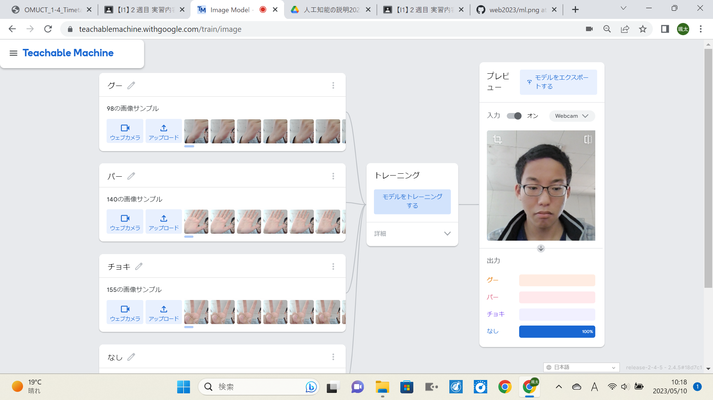
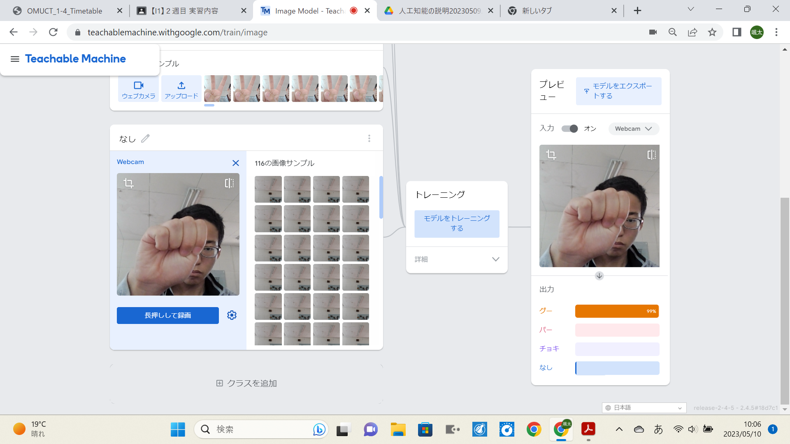
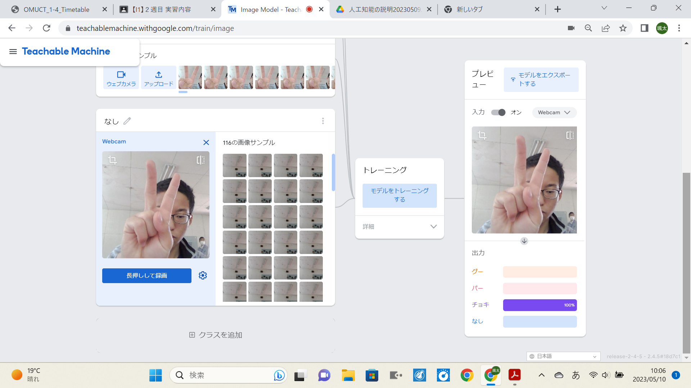
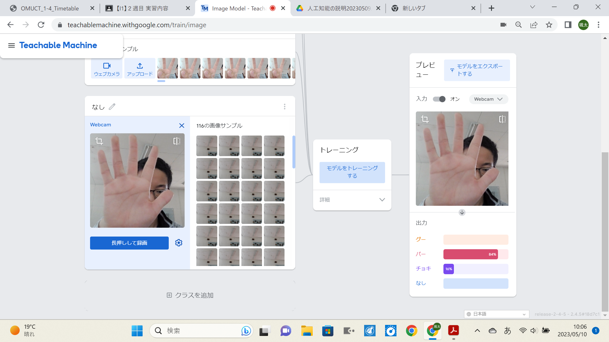
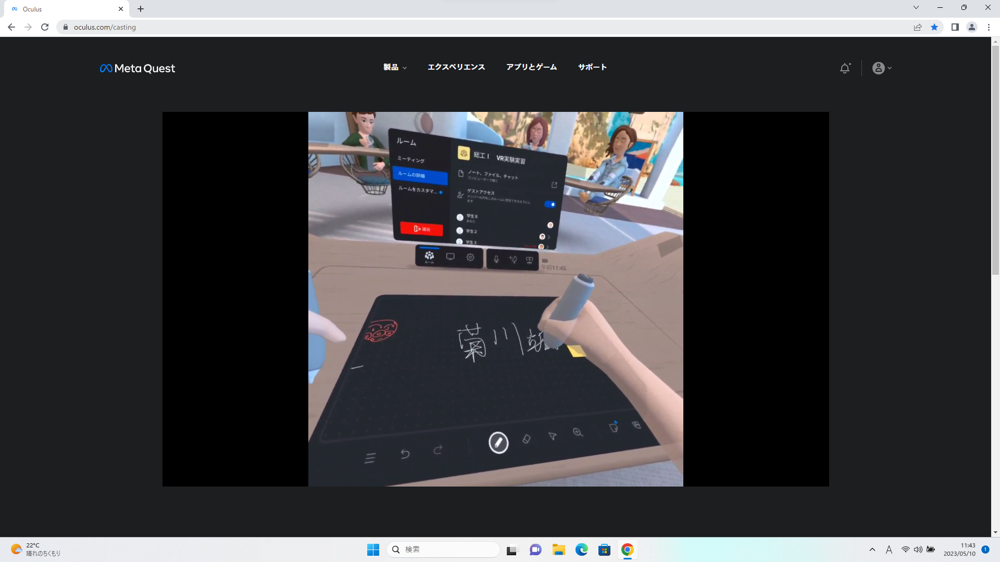

第2週目
2-1 １週目のレポートをHTMLで作る
１週目のレポート
1.内容
画像やホームページを インターネット上にアップロードする方法
などgithubを扱うのに必要な基礎知識を復習した。１回目の授業と
内容は大体同じである。
2.感想
実は、1週目のレポートは授業が終わった時にちまちまと作って
いて、ちゃっかり完成していた。中学校の時にHTMLを作っていて
その時の記憶から自力で作り上げた。画像の貼り付けなど、少し
忘れていたものもあったが、改行などは覚えていて、自信作がで
きたと思っている。
2-2 機械学習体験

なしの時

グーの時

チョキの時

パーの時
1.内容
機械学習の体験として、じゃんけんの出た手を判定するシステムを作った。
機械学習とは、大量のデータを記憶させて、その経験から新しいデータを判断
する学習方法である。今回は、データとして、背景のみを写した写真、グーの
手を写した写真、チョキの手を写した写真、パーを写した写真をそれぞれ100枚
ほど記憶させた。
2.感想
グーを出したとき、何も出さなかったときはほとんど正確に判断できたが、
チョキを出したとき、パーを出したときは余り正確ではなかった。これは、
学習データが良い品質のものではないことが原因だと考えている。もっと
データを増やしてより正確なシステムを作りたい。
2-3 VR（バーチャルリアリティー：Virtual Reality）会議室の体験

1.内容
VRゴーグルを用いて、VR空間の設定や会議室に入ることができた。
VR空間の設定では、机の範囲や高さを設定して現実と接続したり、
パソコンでVR空間を中継することができた。
会議室では、机がホワイトボード代わりになり、実際に文字や絵を
書き込むことができた。その書いた文字は、会議室の黒板に反映され
いる。
2.感想
今の技術のすごさにびっくりした。机の設定をしたことで、まるで
会議室に過ごしているように感じることができた。ホワイトボードに
自分の名前や、ギャグを書いてみたがすぐに消されてしまった。
しかし、ゴーグルを１０分くらいつけていると少し気持ち悪くなっ
てしまう。これは慣れの問題なのかわからないか、解決できる方法を
知りたい。